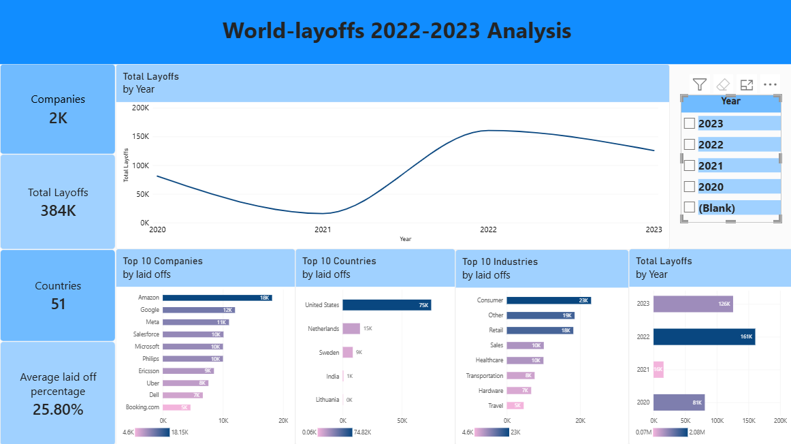

Project Overview
This project uses a layoffs dataset to practice the process of preparing messy real-world data for analysis.
The workflow focused on identifying duplicate records, standardizing inconsistent values, handling missing information, and preparing a clean dataset for exploratory analysis.
Data Cleaning Process
- Created staging tables.
- Identified duplicate records.
- Used ROW_NUMBER() to identify duplicates.
- Standardized company names.
- Standardized industry values.
- Cleaned date fields.
- Handled NULL and blank values.
- Reviewed inconsistent country values.
SQL Techniques
Several MySQL techniques were used throughout the cleaning and analysis process.
- ROW_NUMBER()
- PARTITION BY
- Common Table Expressions
- Self JOINs
- GROUP BY
- Substring
- Aggregate functions
- Window functions
Duplicate Identification
ROW_NUMBER() was used to assign a sequence to records with matching values across selected columns.
This allowed duplicate records to be identified before removing them from the cleaned dataset.
Exploratory Analysis
After cleaning, the dataset can be analyzed to understand layoffs by company, industry, country, and year.
- Companies with the largest layoffs
- Layoffs by industry
- Layoffs by country
- Layoffs by year
- Most affected Company by year
Power BI Dashboard

Key Insights
- Amazon recorded the highest cumulative layoffs in the cleaned dataset at 18,150 , followed by Google at 12,000 and Meta at 11,000. Several large technology and multinational companies appear among the organizations with the highest reported layoffs.
- Consumer and Retail were the two largest industry categories by reported layoffs, accounting for approximately 11.8% and 11.4% of total layoffs respectively. Transportation and Finance also represented substantial portions of reported workforce reductions
- The United States accounted for approximately 66.9% of reported layoffs in the dataset, substantially more than any other country. India followed with approximately 9.4%. This indicates that the dataset is heavily concentrated in the U.S. market and that country-level comparisons should consider this distribution.
- 2022 recorded the highest number of layoffs in the dataset, with 160,661 reported layoffs, representing approximately 41.9% of all reported layoffs from 2020–2023. Layoffs remained elevated in 2023, with 125,677 reported layoffs
- The company with the highest reported layoffs changed across the four-year period. Uber led in 2020 with 7,525 layoffs, Bytedance led in 2021 with 3,600, Meta led in 2022 with 11,000, and Google led in 2023 with 12,000.
Project Files
The complete analysis files will be available in the GitHub repository.
- Raw dataset
- Cleaned SQL dataset
- SQL cleaning scripts
- Exploratory analysis queries
← Back to Portfolio